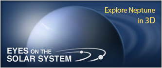

Just the Facts
Metric
| English
| Scientific Notation
Orbit Size (semi-major axis):
4,498,396,441 km
Mean Radius:
24,622 km
Volume:
62,525,703,987,421 km3
Mass:
102,410,000,000,000,000,000,000,000 kg
More Facts
Resources
Missions to Neptune
Images of Neptune
Videos about Neptune
Exploring the Planets - Neptune
NASA Planetary Photojournal - Neptune
National Space Science Data Center Photo Gallery - Neptune
StarDate - Neptune
Voyager: The Grandest Tour
Voyager 2 Science Summary for Neptune
Welcome to the Planets - Neptune
Neptune's Ring System
Power to Explore: Radioisotope Power
Compare Neptune to other Planets/Moons
Visit Neptune

People Spotlight
Gerard Kuiper
Gerard Kuiper is regarded by many as the father of modern planetary science. His theories led to the discovery of the Kuiper Belt.
Mark Hofstadter -
Planetary Scientist
Al Hibbs -
Scientist
David Grinspoon -
Museum Curator
Jeffrey Cuzzi -
Research Scientist
Meet More Space Explorers
Headlines
20 Aug 2012:
Voyager at 35: Break on Through to the Other Side
9 Aug 2011:
Power to Explore: 50 Years of Nuclear Space Power
12 Jul 2011:
Hubble's Neptune Anniversary Pictures
27 Jul 2010:
New Horizons Looks Back
12 Mar 2009:
New Horizons Spots Triton
More Headlines
Science & Technology Features
15 Jul 2013:
Hubble Finds New Neptune Moon
18 Apr 2013:
Solar System Exploration @ 50: What the Experts Picked
25 Feb 2013:
50 Years of Robotic Planetary Exploration: David Kring, Senior Staff Scientist, Universities Space Research Association, Houston; Principal Investigator, LPI-JSC
8 Feb 2013:
50 Years of Robotic Planetary Exploration: Julie Castillo-Rogez, Planetary Geophysicist at the Jet Propulsion Laboratory (JPL)
6 Feb 2013:
State of the Solar System